ACRONYMS Description
CABEI Central American Bank for Economic Integration
CFCs Clorofluorocarbonos
CH4 Methane
UNFCCC United Nations Framework Convention on Climate Change CO2 Carbon dioxide
CONADETI National Commission for Demarcation and Certification CONFOR The National Association of Reforesters
ENACAL Nicaraguan Company of Aqueducts and Sewers ENSO El Niño-La Niña phenomenon
IFAD International Fund for Agricultural Development
GEF Global Environment Facility
(GEF, in English ftlobal Environment Facility)
GHG national greenhouse gas emissions
GRUN Government of Reconciliation and National Unity
GTI Indigenous Territorial Government
HCFCs Hidroclorofluorocarbonos
HFCs Hidrofluorocarbonos
INAFOR National Forest Institute
INETER Nicaraguan Institute of Territorial Studies INPESCA Nicaraguan Institute of Fisheries and Aquaculture
INTA National Institute of Agricultural Technology is a research body IPCC Intergovernmental Panel of Experts on Climate Change
MAft Ministry of Agriculture
MARENA Ministry of the Environment and Natural Resources
MEFCCA Ministry of Family, Community, Cooperative and Associative Economy of Nicaragua
MIFIC Ministry of Development, Industry and Commerce
MINED Ministry of Education
NDC Nationally Determined Contributions
N2O Nitrous oxide
OLADE Latin American Energy Organization
PFCs Perfluorocarbonos
PRE Emissions Reduction Program
RACCN Autonomous Region of the North Caribbean Coast
RACCS Autonomous Region of the South Caribbean Coast
SDCC Secretariat for the Development of the Caribbean Coast
Nicaragua was responsible for 0.02% of global greenhouse gas emissions in 2018 according to the Emissions Database for Global Atmospheric Research, however, it is classified as the sixth most vulnerable country to climate change according to the Index report Global Climate Risk 2017 (GERMANWATCH, 2017) for the historical period from 1998 to 2017.
According to the Third National Communication on Climate Change, Nicaragua is a country highly threatened by climate variability and extreme events. The future scenarios presented in the Fifth IPCC report, adjusted to the country's conditions, indicate that of the 156 municipalities; 21 are threatened by hurricanes; 48 due to drought; 33 due to flooding and 9 due to rising sea levels.
One of the clear evidences of the country's high vulnerability to Climate Change is that, during 2020, extreme events occurred with the passage of two category 4 and 5 hurricanes affecting the entire country. The category 4 hurricane ETA that impacted the Autonomous Region of the North Caribbean Coast (RACCN) on November 3 and 10 days later, Hurricane Iota impacted this same region in category
5. More than 3 million people were affected throughout the country and it is estimated that these phenomena cause losses and damages for an amount of more than 738 million dollars, a figure that is equivalent to 6.2% of the country's GDP.
Under the principle of Common but differentiated Responsibilities and respective capacities, Nicaragua joined the Paris Agreement in 2017, assuming the commitment to strengthen its policies, strategies and government instruments in order to contribute to the goal of not increasing the temperature. in the world at more than 1.5 degrees Celsius.
In terms of climate action, Nicaragua has contributed to reducing greenhouse gas emissions in all its economic sectors, mainly in the energy sector, where it has managed to increase the energy matrix in renewable resources by 59%.
With regard to forests, our country is the first to sign the Charter of Rights of Mother Earth, for this reason, since 2007 forest landscape restoration programs have been implemented that annually generate the recovery of more than 47 thousand hectares of forests, representing more than 2.6 million tons of carbon dioxide removed from the atmosphere.
During 2018, Nicaragua fulfilled its commitments to the United Nations Framework Convention for Climate Change by presenting its Third National Communication on Climate Change; their Forest Emission Reference levels and their Nationally Determined Contributions (NDC). For the year 2019, it published its National Policy for Mitigation and Adaptation to Climate Change; created the National System of Response to Climate Change and is currently preparing its Fourth National Communication.
Nicaragua has a financial strategy implemented through the designated National Authority with the support of institutions that also contribute in the search for climate finance funds. Currently, there is a portfolio in management of 15 programs and projects that total more than US $ 190 Million and will develop activities that will contribute to the conservation and restoration of Forests, as well as the fight against Climate Change. (Annex 1) - [1]
Regarding the mitigation contribution, by 2021, Nicaragua will implement with the Forest Carbon Cooperative Fund an Emissions Reduction Program on the Caribbean Coast that will contribute to reducing approximately 11 million tons of carbon dioxide from deforestation and forest degradation; as well as other programs and projects that will guarantee the sustainable management of forests and protection of ecosystems.
Nicaragua is making efforts to implement actions focused on adapting to climate change. In the last 10 years, 363 springs of water sources have been protected; carried out soil and water conservation works in approximately 25 thousand hectares in the most vulnerable municipalities of the country; Measures to reduce the vulnerability of the road network to climate change have been implemented and the productive systems in Coffee and Cacao have been improved with a resilient approach.
With these actions, the country continues to demonstrate its high national and international commitment to combat the effects of climate change and, above all, protect our most vulnerable peoples.
According to the Fourth Inventory of Greenhouse Gases, the balance of emissions and / or removals in Nicaragua for the period between 2000 (base year) and 2015 (reference year) indicates a decrease in emissions by 1% (Figure 1). Inflection points associated with the national and global context are identified, such as: the changes in government and development policies implemented during the evaluated period, as well as the global economic crisis caused by the real estate bubble in the United States (2008).
The GHG emissions for the year 2000 were estimated at 29,251 GgCO 2 eq; for the year 2005, an increase in total emissions of 10% is observed. During the period 2006 to 2010, emissions decreased by 8%. This emission reduction behavior continues for the next five years, due to the fact that in the period from 2011 to 2015, emissions decrease by 3%, estimating total emissions of 28,967GgCO 2 eq (Figure 1)
Figure 1 Emissions of CO 2 eq per sector
The Agriculture, Forestry and Other Land Uses (AFOLU) sector is the main emitting sector in the entire time series, representing 79% (22,790 GgCO 2 eq); followed by the energy sector with 18% (5,325 GgCO 2 eq); the waste sector with 2% (686.42 GgCO 2 eq) and, finally, the Industrial Processes and Product Use sector (IPPU) with 1% (164.22 GgCO 2 eq).
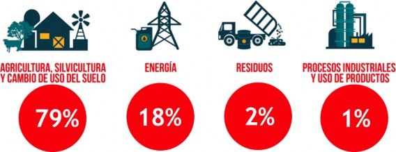
Figure 2 Greenhouse Gas Emissions by Sector - Fourth INGEI
The gas that represents the largest percentage weight is carbon dioxide (CO 2 ). For the year 2000, it is estimated that it represented 78% of emissions, followed by methane (CH4) with 15% and nitrogen oxide (N 2 O) with 7%. With respect to 2015, the weight in gas emissions varies, where carbon dioxide (CO 2 ) represented 60%; methane (CH4) 27% and nitrous oxide (N 2 O) 13%. This occurs due to the increase in the country's livestock herds that are currently an engine of economic development.
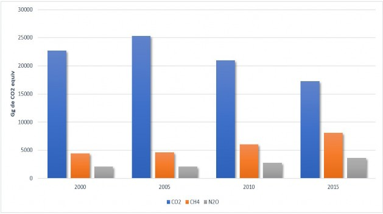
Figure 3 Trends in emissions by GHG (GgCO 2 eq)
Energy: The Government of Unity and National Reconciliation has increased the production of renewable energy from 25% in 2007, to 51% in 2013, even under conditions of severe energy rationing that existed at the time of taking the power, which came from the year 2004.
Environmental Pollution: To contribute to the protection of the ozone layer, the consumption of gases called CFCs has been eliminated by 100% as of January 1, 2010 and a Management Plan is being implemented to eliminate the types of HCFCs gases from 2012 to 2020.
Agriculture: In 2010, Nicaragua joined the Global Methane Initiative, which aims, in the short term, to reduce global methane emissions, capturing it at a reasonable cost and using it as a source of clean energy. Until 2010, 1,512 biodigesters have been built, of which between 300 and 400 approximately are in operation.
Transportation: The project "Promotion of Environmentally Sustainable Transportation in Metropolitan Managua" is being implemented, within the priorities to reform the public transportation system in the Metropolitan area of Managua, as reflected in the Comprehensive Transportation Plan. Obtaining a direct reduction of 892,000 tons of CO 2 emissionsover the next 20 years.
Waste: The integral development project of La Chureca has included not only the sealing of the landfill of the same name, considered the largest in Latin America, but also the construction of a recycling plant where garbage collectors work, as well as the construction of houses, a school for the more than 250 families that inhabit the place and the reduction of the gases produced by the decomposing garbage itself that before the intervention produced spontaneous combustions on the entire surface of the landfill, now they are led outside by a circuit of pipes and gasification chimneys through which the methane gas comes out. These gases are planned to be used in electricity generation by the Mayor of Managua.

4 Main developments in mitig ation to the change climate.
Since 2007, Wastewater Treatment Systems have increased significantly, by 2010, 13 departmental capitals provide wastewater treatment
Since the start of operations of the Managua Wastewater Treatment Plant, the percentage of treatment of wastewater collected in the city has improved significantly from 35.22% in 2007 to 98.19% for 2011 and the treatment index went from 19.66% to 57.63% nationwide.
Forest Management: Nicaragua received the approval of the Forest Carbon Cooperative Fund, through which rural communities and indigenous peoples living in the forests of the Caribbean Coast, Bosawás and Indio Maíz will reduce deforestation and forest degradation, reducing emissions by approximately 11 million tons of carbon dioxide and will receive positive incentives for 55 million dollars in five years. This goal only represents 50% of the potential that the Caribbean region has in reducing emissions. This, through MARENA's ENDE-REDD + program, with the assistance of the World Bank.
Environment and Natural Resources:
In the last 10 years, 363 springs of water sources in the hydrographic basins of the San Juan River, Coco River, Grande de Matagalpa and Pacific Hydrographic Basin were protected, to facilitate the operation of drinking water systems and increase access to water that improves the living conditions of 2,365 families from 20 municipalities in 88 rural communities in the departments of Chinandega, León, Matagalpa, Jinotega, Estelí, Madriz, Chontales and Nueva Segovia.
The carrying out of soil and water conservation works in 25,000 hectares in 22 municipalities of the dry zone, for the departments of Chinandega, León, Matagalpa, Jinotega and Estelí, in order to reduce erosion and sedimentation of the Old River stands out. , Lago de Apanás, Río Estelí, Río Estero Real and Río Negro.
During the period 2007-2017, 5,323 small water harvesting works such as reservoirs, lagoons, micro dams and rainwater catchment systems on house roofs have been executed, supporting the implementation of Adaptation Plans to Climate Change and reduction of vulnerability and risk to drought and floods, prioritizing communities settled in the dry zone, which has benefited 7,848 main families from 350 communities in 16 municipalities.
Agriculture and fishing:The Program for the Development of Productive, Agricultural, Fisheries and Forestry Systems in Indigenous Territories of the RACCN and RACCS (NICARIBE) is executed, 2011-2018. To improve the income levels of 10,580 families living in indigenous and Afro-descendant territories of the Caribbean Coast, supporting the increase in production and the management and sustainable use of natural resources and strengthening their organizations. Funding Source: CABEI, IFAD (Loan and Donation). Financing Amount: U $ 12, 000,000.00. Institutions involved: MEFCCA, MAG, INTA, INAFOR, MARENA, INPESCA, Secretariat of the Caribbean Coast, Regional Governments, CONADETI. Actors: It is estimated that, in its five-year duration, the Program will directly and indirectly serve 10,580 indigenous and Afro-descendant families.
The Program for the Improvement of the Organizational and Productive Capacities of Cocoa Producers and Producers in the Mining Triangle (PROCACAO), 2014-2017, is executed. The project is focused on improving family income and generating jobs, using cocoa as the main source of income and creating a culture in promoting a sustainable agroforestry system, promoting gender equity in the Mining Triangle. Funding Source: SDC. Financing Amount: U $ 4.2 million. Validity: October 1, 2014 to December 31, 2017. Institutions involved: MEFCCA, INTA, MAG and SDCC. Protagonists: Strengthen the organizational, business and technical capacities of 1,200 producers and their organizations located in the Mining Triangle, Autonomous Region of the North Caribbean Coast (RACCN)
The Program to Support Adaptation to Climate Change through the Production of Coffee and Cocoa by Small Producers in Suitable Agroclimatic Zones (NICADAPTA), 2014-2020, is implemented, which seeks to sustainably improve the living conditions of rural families that produce the coffee and cocoa items, in four geographic areas of intervention of the Program, incorporating them into markets and reducing their vulnerability to climate change. Funding Source: CABEI, IFAD (Loan and Donation). Financing Amount: U $ 37, 051,532.00. Valid: January 4, 2014 to March 31, 2020. Institutions involved: MEFCCA, INTA, IPSA, MAG, MIFIC, INETER and Secretariat of the Caribbean Coast. Protagonists: Accompany 40 thousand families with less than 20 blocks that grow coffee and cocoa.
The Project "Support to the Livestock Value Chain in Nicaragua (BOVINOS)" is being executed. 2017-2021, whose purpose is to contribute to the development of a more productive cattle ranch, with better use of resources and more friendly to the environment, in a competitive, sustainable and inclusive way, which allows an increase in income, food security and nutritional and well-being of small and medium cattle ranchers in Nicaragua. Beneficiary areas of this action: 11 municipalities of the Departments of Chontales (Santo Domingo, La Libertad, Santo Tomas, El Coral, Acoyapa and Villa Sandino), Río San Juan (El Almendro) and the Autonomous Region of the South Caribbean (El Ayote, Muelle de los Bueyes, Nueva Guinea and El Rama). Estimated total cost: 21,223,000.00 EUR. Total amount of the EU budget contribution: 20,000,000 EUR. This action is co-financed under a co-financing regime by: Government of the Republic of Nicaragua for an amount of 1,223,000 EUR. AECID amount to be defined in the delegation agreement with the EU.
37 disaster prevention and mitigation infrastructure works have been executed, responding to 88 critical sites in the municipalities of La Concordia, San Rafael del Norte, Jinotega, La Trinidad, San Isidro, Sébaco, Ciudad Darío, Macuelizo, Mozonte, Ocotal , Santa María, Totogalpa, Telpaneca, Condega, Estelí and Somoto. With these works, a response has been given to critical sites prioritized in the framework of Executive Decree 53-2011 of October 17, 2011, on the state of calamity and disaster throughout the national territory, caused by the meteorological phenomenon "Low Pressure Center ”E 12. With these works 45,723 men and women are protected in 16 municipalities that are: La Concordia, San Rafael del Norte, Jinotega, La Trinidad, Sébaco, San Isidro, Ciudad Darío, Totogalpa, San Lucas, Telpaneca, Somoto, Mozonte , Macuelizo, Santa Maria,
Solidarity care for families affected by extreme events: As a consequence of the effects on different socio-natural events that impacted Nicaragua in the 2007-2011 period, the Government provided support and solidarity support to 131,700 families, representing 697,008 people (11.6 per percent of the Nicaraguan population) to whom humanitarian assistance was provided, consisting of food, construction materials, household goods, clothing, medicines, water and sanitation supplies, among others (Contingency measure)
Relocation of 1,887 families (8,435 people) who lived in risk areas, affected by constant rains and 390 families (1,950 people) who lived in the coastal area of Lake Xolotlán that were affected by the intense rains in 2008.
55 decent homes were built for the relocated families in the Municipality of San Francisco Libre. The roofs of the homes of 3,984 families in 74 communities in the municipalities of Bilwi, Prinzapolka, Waspam and Rosita were rehabilitated, which were damaged as a result of the impact of Hurricane Felix on the RACCN, which represented 104.8 percent of the proposed goal which was 3,800 roofs of rehabilitated homes. Additionally, the rehabilitation of the structure of 240 homes was carried out in 4 communities of the Llano Norte of the municipality of Puerto Cabezas and the municipality of Waspam in the RACCN.
77 churches were rehabilitated in the RACCN and RACCS, which were affected by hurricanes Felix and Ida, in order that they also serve as a refuge for the population at the time of presenting an event.
Nicaragua's Nationally Determined Contribution (NDC) was presented to the UNFCCC in 2018 and is intended to contribute to compliance with the Paris Agreement on mitigation and adaptation to Climate Change.
In relation to mitigation, it focuses on the sectors of energy and forest management, land use and changes in land use. The NDC defines measures to increase the production of renewable energy sources, as well as actions for the conservation and restoration of forests.
Based on the right to sustainable development of the Nicaraguan people, the NDC considers implementing national productive strategies in accordance with the normative and policy instruments of the country; which contributes to generating foreign investment and international cooperation that contribute to meeting the proposed goals in the priority sectors of the NDC.
The growth of electricity generation through renewable energy sources has been limited by the high price of technologies for the generation of clean energy, which has forced Nicaragua to establish a balance between the production of energy with different sources.
Due to the above, it is proposed in the NDC, to increase the percentage of electricity generation through other renewable energy sources such as solar, wind and biomass to 60% in 2030, which represents compared to 2007, a 35% increase in the participation of renewable energies within the national electricity matrix, considering the increase in coverage.
Nicaragua has extensive coverage of natural forests that represent 30% of the total area of the continental surface (3.9 million ha; INETER 2015), which makes it the fourth country in Central America with the largest area of forests, and therefore, with potential conditions to encourage its development from the forest heritage. According to the biological composition, 4 types of forest have been identified: broadleaf, coniferous, palm and mangrove.
The forests are distributed in 3 main physiographic regions of the country. According to the 2015 land use map, they are found in a higher proportion in the Caribbean Coast region with 88% and 12% in the Pacific and Central - North regions. Figure 5

Figure 5 Conservation of forests within Indigenous Territories and Protected Areas
The loss of natural forests continues to be a challenge for Nicaragua. The most recent report on land use change at the national level presented by MARENA (2018), shows that during the period between 2000 and 2015 the country lost 100,815 ha of forest per year, that is, deforestation was reduced by one 52% with respect to the figure reported between the period 1983 - 2000 (208,303 ha).
According to the historical land use change studies carried out for the period 2005 - 2015, Nicaragua has an average annual rate of natural regeneration of 50 thousand ha / year and has an area potential to implement actions for the management and restoration of forest cover 1,048 Million Ha. Figure 6
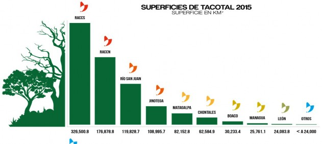
Figure 6 Potential area for forest restoration
Due to the above and the portfolio of projects under management described in Annex 1, Nicaragua proposes in its NDC for the Forests, land use and changes of uses sector to reduce emissions by 2030 by 20% with respect to its line base, through actions of restoration, management and conservation of forests.
Due to its position and geographical characteristics, Nicaragua is exposed to various events linked to natural climate variability, such as the ENSO phenomenon (El Niño-La Niña), the Pacific Monsoon systems, waves and tropical hurricanes, among others, which generate significant threats of drought, floods, landslides, water deficits, destruction of crops, forests and houses.
Due to economic, social, cultural and environmental factors, Nicaragua is highly vulnerable to threats generated by climate variability and climate change, which implies significant annual losses and damages of human and economic life, which according to World Bank figures amount to 301.75 million dollars of purchasing power, equivalent to an average annual loss per unit of GDP of 1.72%.
To cope with adaptation to climate change, the country requires financial support to develop priority adaptation measures, such as:
Modernization of the hydrometeorological services of the country, which allow maintaining accurate forecasts and early warning systems for an effective and efficient response, which includes modernization of observation, assimilation and forecasting systems, access to sensors and technologies, as well as training of qualified human resources. In 2021, the technological strengthening process will take effect.
The implementation of the NDC requires considering climate change as a problem that influences relevant public and private decisions and its impacts affect the economic growth of the country, therefore, for its integration into economic and social development, it is necessary to consider the following general principles:
Focus on sustainable development: Climate change must influence decisions and the set of actions that generate development, selecting measures that combine adequate mitigation and adaptation, that guarantee sustainable economic growth in the face of the impacts of climate change and with greater potential in the reduction of greenhouse gases and compliance with the SDGs.
Complementarity with disaster risk management: Climate change is complemented with disaster risk management, considering that reducing the risk of current events is an important contribution to reducing future risk. Economic options that are vulnerable today will not adapt to future climate change, therefore, measures to reduce exposure and vulnerability to the threats of the current climate (historical climate variability) must also contribute to future climate adaptation.
Innovation and efficient use of resources: Challenges in the face of climate change must incorporate innovation in decisions associated with technological development, production processes and business strategies of the private sector, as well as in public investments to achieve economic development safe, reducing future climate risks and increasing greenhouse gas mitigation capacity.
Ecosystem approach: Adaptation measures to climate change will recognize that the environmental degradation of the country's ecosystems contributes to increasing vulnerability to climate change and decreases mitigation capacity, therefore, adaptation measures will be articulated in a dynamic and evolutionary context of ecosystems.
Gender equity: Considering that women are protagonists in all economic sectors of the country, including the production and marketing of agricultural and fishery products, activities that are receptors of the impacts of climate change and climate variability, adaptation measures and mitigation against climate change will incorporate all the rights established in the different national legal instruments on gender equality.
Nicaragua has a Law on Equal Rights and Opportunities (LAW No. 648, approved on February 14, 2008) - [2] , which establishes 6 guidelines on the environment, guiding the incorporation of the country's environmental policies into gender approach as a transversal axis.
Citizen participation: The adaptation and mitigation measures for climate change will incorporate the participation of the general population, especially those most vulnerable, under the family and community model.
Viability of the measures: The measures must be carefully evaluated to determine their economic, social, environmental and climatic viability, for this the goals proposed in the policy will be achieved at the lowest costs and generate the greatest possible benefits.
Climate finance: Government institutions and the private sector will work together to manage financial resources that contribute to mitigation and adaptation to climate change.
Recognition of native peoples and indigenous communities: climate change affects the habits, customs and traditions of indigenous peoples, for which reason emphasis will be placed on providing support in their activities for the preservation of the environment and sustainable use of natural resources.
The property rights of indigenous territories are guaranteed in the first place in Law 445, law of the communal property regime of indigenous peoples and ethnic communities of the Autonomous Regions of the Caribbean Coast of Nicaragua and of the Bocay, Coco rivers, Indian and Corn. Nicaragua has established in the National Strategy for the Reduction of Emissions from Deforestation and Forest Degradation, as well as in its impact programs, compliance with environmental and social safeguards that guarantee the full participation of indigenous territories and peoples at the national level.
Compliance with national commitments is fundamental in the face of the global challenge of mitigation and adaptation to Climate Change. Given this, Nicaragua has made significant efforts to implement actions that guarantee compliance with the goals established in its NDCs. The progress made up to 2020 in mitigation is described below.
Established goal: increase the percentage of electricity generation through renewable energy sources, to 60% by 2030.
According to the Electricity Generation Expansion Plan (2019-2033) - [3] prepared by the Ministry of Energy and Mines, for 2006, electricity generation from renewable resources was 42% through hydroelectric plants, 33%, geothermal 28% and biomass 39%.
In order to cover the demand for electrical energy and guarantee coverage in the distribution network nationwide, it was expanded from 54% in 2006 to 98.42% in 2020. This increase in installed capacity has been carried out with a sustainable development approach and caring for mother earth. The main investment that has been made in the expansion of hydroelectric, wind energy (2009) and solar (2013) plants. It should be noted that the investment for the construction and start-up of the plants is private capital.
Figure 7 shows the distribution by types of plants used for power generation in 2016. Wind power plants that started operations in 2009, by 2016 already represented 17.3% of electricity generation ; followed by geothermal with 10.1%; Hydroelectric with 10.1%; biomass 7.6% and solar that began operations in 2013 for 2016 barely represented 0.05%.
Due to the efforts made by the country, by 2019 a considerable increase was achieved in the generation of energy with renewable sources. In Figure 8, the increases by type of source are presented, in the case of the geothermal power plant they represented 17%, followed by wind with 16%; biomass and hydroelectric 12% and solar energy 1% (representing a significant increase compared to 2016).
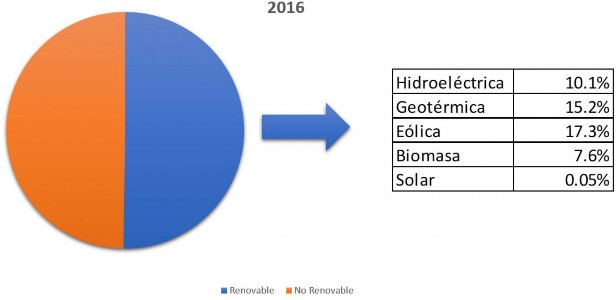
Figure 7 Percentage distribution of nominal installed capacity by source type 2016
Therefore, the increase in the energy matrix using renewable sources from 2016 to 2019 is 15%, reaching 58% of renewable sources for power generation in the country.
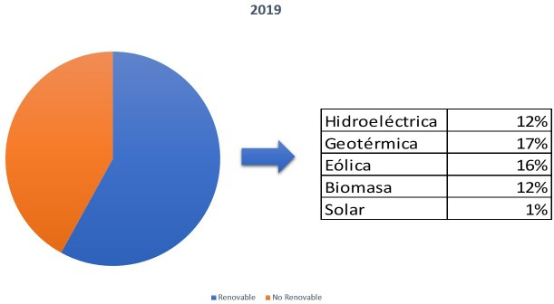
Figure 8 Percentage distribution of nominal installed capacity by source type 2019
During the period 2006 - 2017, the evolution of installed capacity by type of power generation source is observed. The expansion of the thermal power plant is identified to guarantee compliance with the national energy demand, however, the increase in capacity and diversification of renewable energy sources installed in the country throughout this period is also observed.

Figure 9 Nominal Installed Capacity (MW) By type of source.
Established goal: promote agroecological production, permanent crop plantations under shade resistant to the impacts of climate change, as well as the reduction of extensive livestock practices and the incorporation of forests in vacant lands that allow conserving the national capacities of carbon sinks.
Forest plantations
Nicaragua has productive strategies that promote the reconversion of productive areas towards environmentally friendly systems, among them: silvopastoral systems, agroforestry systems, forest plantations for industrial purposes, environmental restoration and management of natural regeneration, reforestation campaigns.
Since 2007, INAFOR promotes the National Reforestation Crusade as an emblematic program of the Government of Reconciliation and National Unity (GRUN), with the participation of different government institutions (MARENA, MINED, National Army, National Police, MEFCCA ), Municipal Governments and civil organizations (Guardabarranco Environmentalist Movement, among others). A large part of the plantations have been established with a focus on conserving public and private areas and raising awareness among the general population.
There is high potential for the establishment of commercial forest plantations by companies
private. Until 2020 there are multiple companies registered, standing out: Maderas Segovianas
SA with pine plantations; Agroforestal SA (African mahogany plantations); The National Reforestation Association (CONFOR), between 2003 and 2016 has established 22,521 ha, with an estimated investment to date of US $ 128 million and the same growth rate is expected to continue in the coming years.
In Figure 9, the reports of the national forest activities registry office by INAFOR are shown, where it refers to the areas under forest plantations registered during the five-year period 2014 to 2019, these areas correspond to forest plantations with industrial objectives, energy or agroforestry systems.
According to INAFOR records, during the period from January 2014 to September 2019, 8,282.22 hectares of plantations have been established in 14 Departments and 2 Autonomous Regions of the country. The two departments that lead this effort are Chinandega (2,578.83 ha) and Jinotega (1,031.4 ha).
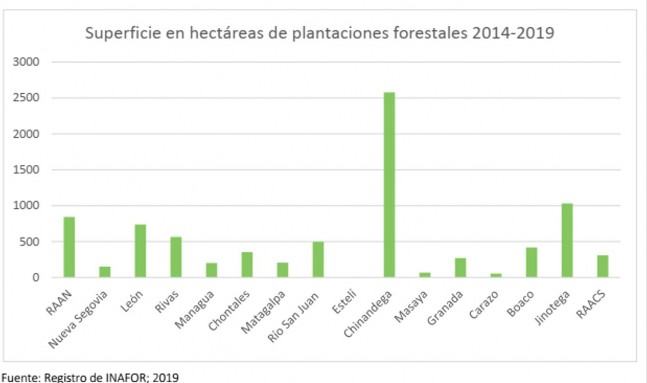
Figure 10 Registry of forest plantations
In addition, the Nicaraguan Company of Aqueducts and Sewers (ENACAL), within the framework of the National Reforestation Crusade, has managed to establish 115 hectares of plantations, including educational workshops in more than 13 cities in the country.
Reforestation
In 2007, INAFOR established 12,000 ha and in subsequent years it managed to reach goals of 20,000 ha. For the year 2017, the reforestation goal established by INAFOR was 26,000 ha distributed throughout the national territory.
Statistics from the National Forestry Institute (INAFOR) highlight that from 2007 to 2019, more than 120,000 hectares have been reforested, giving priority to the country's central and Caribbean coast areas.
According to the national land cover maps of Nicaragua, during the period 2005 - 2015, a significant recovery of the vegetation cover is evidenced, improving carbon reservoirs through changes of cover in natural savannas, tacotales, shrub and herbaceous areas . It is estimated that 50 thousand ha are restored annually through the management of natural regeneration, which occur in the Pacific and North Central corridor of the country.
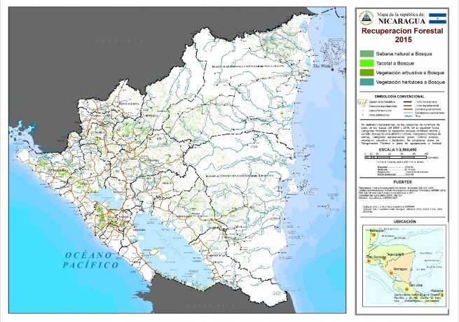
Figure 11 Forest cover recovery map for the period 2005 - 2015
Link between forest restoration and Nicaragua's NDC
To adapt and mitigate climate change, as well as preserve the nation's natural areas and services, Nicaragua joined the 20x20 Initiative in 2015 with the goal of restoring nearly 2.8 million hectares to: Manage watersheds, Improve the resilience of rural livelihoods to the effects of Climate Change and conserving biodiversity.
The 2.8 million hectares are distributed in actions related to the conservation, restoration, management and protection of forests:
Through these measures, the country implements actions to recover areas degraded by changes in land use. According to the study of the Causes of Deforestation and Forest Degradation - [4] prepared by MARENA in 2019, the direct causes of forest loss are linked to the expansion of the agricultural frontier and extensive cattle ranching. It is estimated that approximately 84% of the forest land use has been changed to other uses especially attributed to livestock.
For this reason, the restoration measures established in the programs and projects are aimed at establishing sustainable productive systems that articulate biological corridors, restore landscapes and ecosystems, increasing biodiversity and other ecosystem services.
To achieve this objective, Nicaragua, through the national system of production, consumption and trade, has established productive strategies with a focus on mitigation and adaptation to climate change, promoting best practices for the establishment and management of crops and incorporating initiatives for low-emission production and that also contribute to environmental restoration.
Management of programs and projects of forests and Climate Change
In order to guarantee compliance with the goals proposed in the NDC for this sector, Nicaragua has managed a portfolio of projects focused on forest restoration, protection and conservation (Figure 12).
Emissions Reduction Program (PRE) which will begin in 2021. It is expected to generate a positive environmental and economic impact on rural communities and indigenous peoples living in the forests of the Caribbean Coast, BOSAWAS Reserves and Indio Maíz. In addition, it will contribute to reducing deforestation and forest degradation, mitigating approximately 11 million Tons of Carbon Dioxide.
Strengthening the Resilience of Multiple Use Protected Areas for the Generation of Multiple Global Environmental Benefits (GEF5). It began in 2020 and will have an impact on 13 protected areas, covering the biological corridors of forests in the dry, humid, semi-humid and cloudy tropics. It will contribute to mitigate -137,127 tCO2eq.
Resilient Landscape Management (GEF6). It has an impact on the biological corridor of 9 protected areas. Of which, 7 are within the country's Dry Lands Corridor, in the ecosystem of the pine and oak-oak ecoregion and 2 in the ecosystem of the Caribbean pine forest of the humid tropical forest in the Autonomous Region of the Caribbean Coast North (RACCN). The total area of incidence of this project is 141,355 ha. It will contribute to mitigate 860,000 tCO 2 eq.
Program for the sustainable management of biodiversity in the Indio Maíz Biological Reserve, Indio-Maíz Biological Reserve (Central Area of the Río San Juan Biosphere Reserve) and its Buffer Zone (GEF7). The project's geographic area of influence is 808,631 ha. It will contribute to mitigate 3,300,000 tCO2eq for 5 years).
Transforming food systems and reducing deforestation in the landscape related to protected areas and biological corridors of the Autonomous Region of the South Caribbean Coast and Río San Juan (FOLUR). It will contribute to mitigate 4.89 MtCO 2 eq for 5 years).
Integrated climate action to reduce deforestation and strengthen resilience in the BOSAWÁS and Río San Juan Biosphere Reserves ”(BIO-Clima). With financing from the Green Climate Fund, Nicaragua will implement an important capacity building component for the productive restoration of the landscape and the conservation of forests. It will contribute to mitigate 18 MtCO 2 eq for 7 years)

Figure 12 Schedule Map of love and Nicaragua Projects management.
As part of the commitments acquired by Nicaragua before the convention, actions have been developed aimed at strengthening the metrics for the monitoring, reporting and verification of emissions, in that sense, a continuous improvement roadmap has been proposed that the country prepares Before the arrival of the reinforced transparency framework, based on the 5 fundamental pillars established by the convention: (1) Transparency, (2) Precision, (3) Completeness, (4) Consistency and (5) Comparability.
As of 2021, Nicaragua will establish a National GHG Inventory System, which will serve as an interoperable platform where the generators of sectoral statistical information estimate activity data and calculate their emissions. There is a proposal for institutional arrangements that group each institution according to its role in the INGEI sectors.
As part of the implementation of the Decree to Establish the National Policy for Mitigation and Adaptation to Climate Change and for the Creation of the National System of Response to Climate Change (SNRCC), the first steps have been developed to formalize the participation of national institutions in the preparation of the INGEIs on a periodic and validated basis.
In function of presenting official activity data and eliminating duplication of efforts in the definition of conceptual aspects, development of data collection formats, methods, methodologies and units of measurement that cover the needs of all institutions in the different fields in which that each one develops.
Due to the fact that the system has a great variety of institutions, working groups made up of representatives of said institutions have been created for each of the INGEI sectors to review and validate the activity data, variables, emission factors and results. of the estimates for each of the sectors. (Figure 13)
In addition, Nicaragua has established collaboration agreements with the Latin American Energy Organization (OLADE) to review and provide input for improvement on the metric of emissions in the energy sector from the consumption of fossil fuels and geothermal energy. Likewise, it has a Monitoring, Reporting and Verification table for the Forest, Use and Land Use Change subsector, where methodological documents, studies on historical and current dynamics of changes in use at the national, regional and national levels are prepared. territorial.
By 2021, the country will implement projects that will contribute to strengthening national capacities for the presentation of international reports and reports. Among them: a) Enabling the preparation of the Fourth National Communication of Nicaragua and the First Biennial Update Report to the UNFCCC and b) Strengthening institutional and technical capacities in the agricultural and forestry sectors of Nicaragua to respond to the requirements of the transparency framework. reinforced under the Paris Agreement - CBIT.
The aforementioned projects will contribute to improving the following technical aspects required by the UNFCCC to guarantee the guarantee and quality control of the reports:
Regarding transparency, the origin of each of the data used will be documented in a spreadsheet showing a link to the digital base information used and on each of the assumptions used in the calculations, contributing to the realization of In a simple way, both internal quality control and quality assurance by external reviewers, whether national or international.
Regarding precision, Nicaragua will develop a system of annualized accounts that allows reflecting the annual evolutions, determining trends such as the disturbances that have occurred and their relationship with the specific economic sector. This will be analyzed on a sectoral basis, seeking to improve the metric as much as possible through the development of higher-level methods including national emission factors.
Regarding completeness, analyzes will be carried out at the level of sectors and subsectors. To date, Nicaragua has taken advantage of the flexibility to report only the main gases, a flexibility that persists in the Paris Agreement; however, due to the progress made in the implementation of the Kigali Amendment, Nicaragua would be in a position to report in the future at least the main fluorinated gases (HFCs and PFCs).
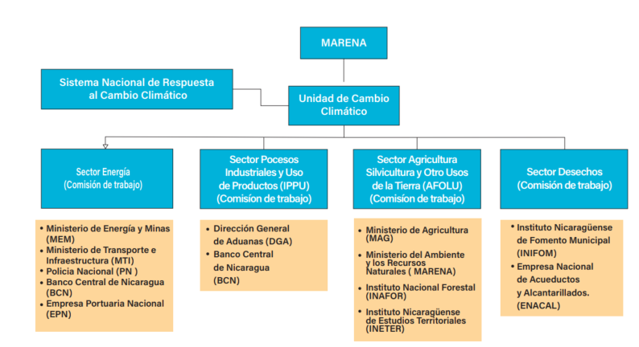
Figure 13 Organizational structure for the construction of the INGEI
Regarding comparability, work will be done on the development of a time series, which will run from the reference year of the NDC and the year on which it is reported will not exceed 3 years from the year of presentation.
In terms of consistency, it will be ensured that there are no changes in emission trends as a result of different methods or assumptions.
The Government of Nicaragua implements a Communication Policy based on three fundamental principles: the social right to information and free expression, the unrestricted adherence to the Political Constitution of Nicaragua and the citizen's right to participate in public decisions.
As part of the actions developed in the process of updating the NDC, communication with vulnerable sectors was strengthened, expanding the dialogue with indigenous peoples, women's groups, and youth at the national level. Figure 14
The communication process was developed with a multisectoral and multicultural approach, which involved all interested parties: indigenous peoples and Afro-descendants, agricultural producers, universities, institutions of regional and national governments, the media, social organizations and the population in general.
The Communication Plan will continue to work with the model of alliance, dialogue and consensus with the communities at the national level, through the development of technical communication tables, with the participation of communicators from the regional governments, representatives of the GTIs and the Ministry of Development. from the Caribbean Coast.
As part of the communication strategy of the NDC, during its implementation, the Communication Policy of the Government of Reconciliation and National Unity will be taken as a fundamental guide, designing and implementing national campaigns for the formation of values, placing families as the main protagonists in the process of meeting climate commitments.
In the same way, inter-institutional communication objectives will be articulated, creating synergies that allow reaching a greater number of protagonists, through conventional means, whether they are radio, written press, digital portals and television.
The new challenges posed by the global pandemic situation establish new paradigms in effective communication, for this reason, the strategy proposes dissemination through mass media, contemplating a specific strategy in social networks for the communication of progress and main challenges in complying with the NDCs.
At the inter-institutional level, work will continue under the platform of the National Climate Change Response System, with the aim of effectively aligning strategies, programs and projects for the benefit of compliance with contributions.

Figure 14 Presentation of progress in the Determined National Contribution with women , youth, academia and institutions
According to the IPCC 1.5 report and the sense of urgency in which it was presented, which highlights the need for accelerated and immediate action to limit the increase in global temperature to 1.5 ° C, Nicaragua has developed a proposal to increase the ambition of its NDCs focused on mitigation and adaptation to Climate Change.
According to the NDC sent by Nicaragua to the UNFCCC in 2018, the main efforts focus on increasing the energy matrix by up to 60% with renewable energy sources and reducing emissions from deforestation and forest degradation by 20% for the year 2030.
The Government of Nicaragua, in its strategic development plans and national policies, has guided actions that contribute to the protection, care, rational and sustainable use of the natural resources that Mother Earth provides. For this reason, progress has been made until 2020, in an increase in the energy matrix with renewable sources of resources to 59%; national capacities for monitoring, reporting and verification of forest resources have been strengthened; increased goals for reforestation; surveillance and protection of areas in natural regeneration processes; the surveillance systems within protected areas have been strengthened; strengthened strategic alliances with indigenous and Afro-descendant communities; among others.
Considering the above, a proposal is described below to increase the NDC's ambition with respect to GHG mitigation of the country's productive sectors.
Conditional: increase the energy matrix up to 65% with renewable energy sources by 2030.
Required activities:
Reduction of the consumption of fluorinated gases considered in the Kigali amendment
Required activities:
Development of a strategy for the use of natural refrigerants or those with low global warming potential, which would have an impact on the industrial processes sector, the emissions subsector of fluorinated substitutes that deplete the ozone layer.
Conditional NDC in the forestry sector and land use change: Reduce CO 2 emissions generated by gross deforestation at the national level by 25% by 2030 with respect to the country's baseline.
During 2020, Nicaragua designed projects aligned and oriented to the restoration and protection of forests; the establishment of sustainable and environmentally friendly production systems and the strengthening of local and institutional capacities that guarantee the protection of the forest.
It is considered to implement interventions that contribute to supporting indigenous communities and producers with capacities, technical assistance, inputs and solid financial and market incentives for the sustainable intensification of their livelihoods oriented to the restoration and conservation of natural resources and forests in their farms and territories. These interventions are: 1) establishment of agroforestry systems; 2) establishment of silvopastoral systems; 3) Management of natural regeneration; 4) Community forest management; 5) Commercial reforestation and 6) Improved forest governance.
Considering the mitigation potential of the aforementioned interventions, Nicaragua will increase its ambition in the forestry sector under the condition of receiving sources of international financing for the implementation of programs and projects that contribute to the fulfillment of the country's goal.
Required activities:
Capacity building plan for institutions responsible for monitoring forests and land use change.
Table 1 presents a comparative synthesis of the NDC presented in 2018 and the changes incorporated in the update to 2020.
|
NDC ACTUAL |
NDC Increased Ambition Proposal |
||
|---|---|---|---|
|
Sector |
Meta |
Sector |
Meta |
|
Energy |
By 2030, 60% of the installed capacity of the electricity matrix must come from renewable energy sources |
Energy |
By 2030, 65% of the installed capacity of the electricity matrix must come from renewable energy sources |
|
Forests and Land Use Change |
Increase in Carbon absorption capacity by 20% with respect to the Reference Scenario by 2030. |
Forests and Land Use Change |
Increase in Carbon absorption capacity by 25% with respect to the Reference Scenario by 2030. |
|
Industrial processes |
Not considered |
Industrial processes |
Reduction of the consumption of fluorinated gases considered in the Kigali amendment |
Table 1 Summary of the proposal to incr emento of ambition of DCL in Nicaragua.
The process of updating the NDCs in Nicaragua has been assumed as a continuous task, where the monitoring, follow-up and evaluation of the proposed goals is carried out in a systematic way. A series of actions that should be considered in the preparation of future updates of the NDC are listed below.
Nicaragua has prepared climate change mitigation scenarios considering the ambition proposed in its Nationally Determined Contributions (NDC).
In a scenario where the country does not develop and implement actions that contribute to reducing greenhouse gas emissions "Business as Usual", emissions by 2030 are expected to be 77 million TonCO 2 eq generated by all productive sectors .
In a scenario of successful compliance with the current NDC, emissions will be reduced by 8%, that is, by 2030 Nicaragua will emit 71 million TonCO 2 eq. In a scenario that they consider increasing the NDC's ambition in the energy, forestry and land use change sectors (as proposed in table 1), the country will be able to reduce its emissions by 10% with respect to the scenario “ Business as Usual ”, that is, by 2030 Nicaragua will emit 69 million TonCO 2 eq. Figure 15
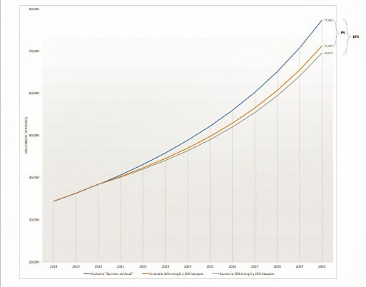
Figure 15 Mitigation Scenarios considering current NDC and proposed increase of ambition in NDC.
In the process of updating the NDC, the insertion of specific scopes and objectives related to adaptation to climate change is contemplated. In this sense, in the case of Nicaragua, the multi-criteria analysis methodology was used, taking into account the following variables:
As part of updating the NDCs to the measures identified, they were grouped by sector of intervention according to national priority and scopes and objectives were defined, as well as their contribution to meeting the sustainable development goals. Table 2
Table - 2 NDC adaptation measures and their relationship with the SDGs
|
Adaptation Measure |
Sustainable Development Goal |
Prioritized sector |
Sector objective |
|---|---|---|---|
|
Increase efficiency in the protection of biosphere reserves through a program of land management and promotion of reforestation, promoting reforestation, for an investment amount of approximately 400 million dollars. |
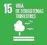
|
Biodiversity |
Promote productive ventures that reduce pressure on natural resources. It contemplates actions for the conservation of habitat and species of both flora and fauna, through the sustainable management of the resource. |
|
Develop a national program to capture water and promote irrigation systems in the dry corridor of Nicaragua |
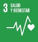 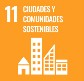
|
Water resource |
Promote infrastructure and ecosystem actions that increase water availability Availability of the resource according to the demand offered: human, productive, energy and industrial consumption. It includes infrastructure and restoration actions. |
|
Development of drinking water and sanitation infrastructure and resilience programs for urban drinking water systems. |
|||
|
Implement the National Water Resources Plan |
|||
|
Formulation of the Resilient Management Program for prioritized ecosystems with a landscape approach and adaptation based on ecosystems. |
|
Forest Resource |
Promote the integral management of the forest resource with a landscape approach. It encompasses the protection of ecosystem services provided by forests and attention to the most vulnerable (native communities and small forest producers) |
|
Capacity development, access to technology and financing in the agricultural sector |
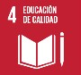
|
Productive sector |
Increase productivity under a climate change scenario. Protection of agricultural and livestock production and its contribution to the family economy. It contemplates actions to small subsistence farmers |
|
Development of knowledge and response capacities on the impacts of climate change on the health of the Nicaraguan people. |
|
Human health |
Reduce vulnerability and increase the resilience of the population to the effect of climate change on health. Improvement in the response capacity of the health system to cope with to the main threats of climate change, mainly in the most vulnerable sectors. |
|
Modernization of the hydrometeorological services of the country, which allow to maintain accurate forecasts and early warning systems for an effective and efficient response |
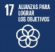 |
Infrastructure and human settlement |
Reduction of vulnerability in human settlements. Increase in the adaptive capacity of communities, through climate risk management in their infrastructure works. |
|
Measures for the development of infrastructure and drainage systems in the capital city and other Pacific cities of Nicaragua that are highly vulnerable to flooding |
|
Infrastructure and human settlement |
Reduction of vulnerability in human settlements. Increase in the adaptive capacity of communities, through climate risk management in their infrastructure works. |
|
Access to additional resources to implement adaptation measures in the road infrastructure network |
|
Infrastructure and human settlement |
Reduction of vulnerability in human settlements. Increase in the adaptive capacity of communities, through climate risk management in their infrastructure works. |
|
Promote adaptation measures focused on Human Settlements in Nicaragua. |
|
Annex 1 Programs and Projects in Management
|
No. |
Source |
Projects |
Total Amount in Management US $ |
|---|---|---|---|
|
1 |
FCPF: Cooperative Fund for Forest Carbon / WB |
REDD + Program to Combat Climate Change and Poverty in Nicaragua |
55.000.000 |
|
2 |
COSUDE |
Community Management Project in the Dipilto River Basin. PHASE II |
2.100.000 |
|
3 |
GEF 6 |
Nicaragua Resilient Landscapes Management Project (GEF ID 9579) |
4.389.261 |
|
4 |
GEF 7 |
Program: Sustainable Management of Biodiversity in the Indio Maíz Biological Reserve |
3.370.000 |
|
5 |
Gef-FOLUR |
Transforming food systems and reducing deforestation in the protected areas and landscapes of the biological corridors of the Autonomous Region of the South Caribbean Coast and the department of Río San Juan (FOLUR Nicaragua). |
4.000.000 |
|
6 |
FVC - BIOCLIMA |
Comprehensive climate action to reduce deforestation and increase resilience in the BOSAWAS and Río San Juan Biosphere Reserves |
110.000.000 |
|
7 |
GEF - CBIT |
Strengthening of institutional and technical capacities in the agricultural and forestry sectors of Nicaragua to respond to the requirements of the Enhanced Transparency Framework (MTR) under the Paris Agreement. (GEF ID 10118) |
863.242 |
|
8 |
ONUDI |
Initial Evaluation of Minamata (MIA) and the preparation of the National Action Plan (PAN-Mercurio) |
700.000 |
|
9 |
FDV SICA-CCAD |
Restoration of Resilient Landscapes and Ecosystems to Climate Change in the Municipality of El Castillo, Rio San Juan Biosphere Reserve. |
1.500.000 |
|
10 |
CCAD |
Resilient Gulf of Fonseca project. |
8.000.000 |
|
11 |
NDC Parnertship |
Plan to strengthen capacities and implement climate actions in Nicaragua. NDC |
190.000 |
|
12 |
FVC |
Preparation and support for the preparation of the PNA- Readiness |
3.000.000 |
|
13 |
FVC - ONU Ambiente |
Ecosystem-based adaptation and transformational measures to increase resilience to climate change in the Central American Dry Corridor and the Arid Zones of the Dominican Republic |
0 |
|
14 |
AMEXCID-CONANP |
Institutional strengthening for the conservation and management of protected areas in Mexico and Nicaragua |
0,00 |
|
14,1 |
AMEXCID -PROFEPA |
Wildlife Management and Landscape Restoration Project |
0,00 |
|
15 |
United Nations Convention to Combat Desertification. UNCCD |
Restoration of landscapes and ecosystems to reduce land degradation in the Río San Juan Biosphere Reserve |
0,00 |
|
Resource mobilization |
US$ 193.112.503,00 |
Historical analysis of land use changes for the period 2005 - 2015 using official information from INETER ↩
http://legislacion.asamblea.gob.ni/normaweb.nsf/($All)/DFACDD675534DACE0625744B0077C73F ↩
http://www.mem.gob.ni/wp-content/uploads/2019/05/Plan-de-Expansion-de-la-Generacion-Electrica-de-2019-2033.pdf↩
http://www.marena.gob.ni/Enderedd/wpcontent/uploads/Fases/2.%20Estudio%20Causas%20Desforestaci%C3%B3n%20y%20Degradaci%C3%B3n%20Forestal.pdf↩